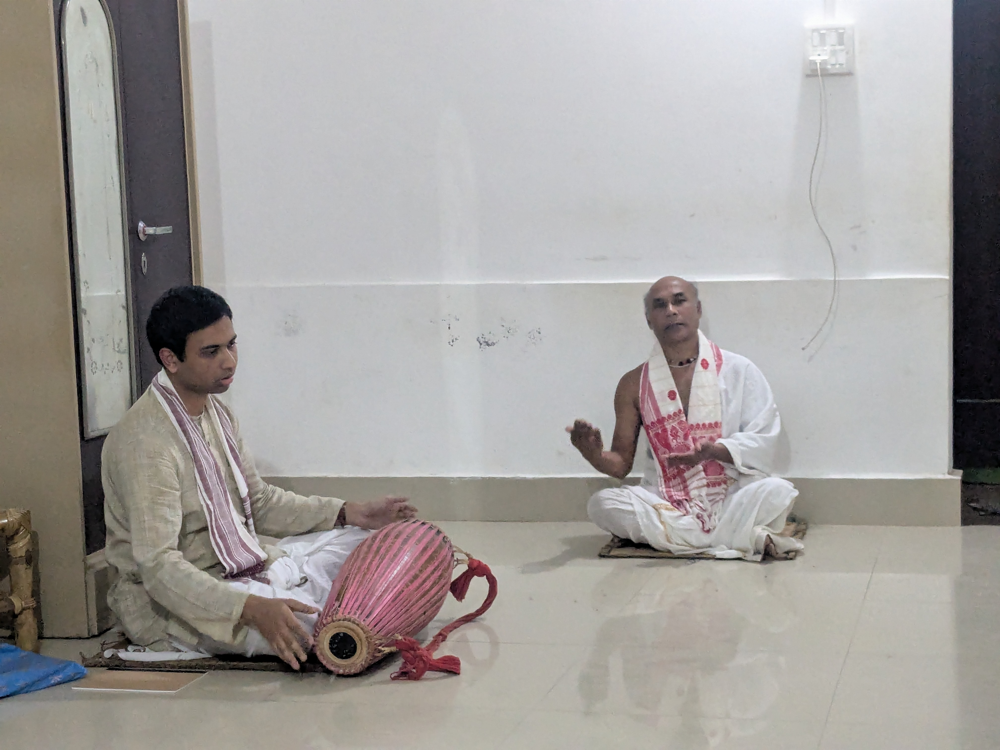

Beyond the Blackboard
When I am not working on equations or refining mathematical proofs, I dedicate my time to a variety of analog, cultural, and outdoor pursuits that keep me grounded:

Practicing traditional Assamese devotional percussion and rhythmic patterns.
Guru: Adyapak Bhaben Borbayan